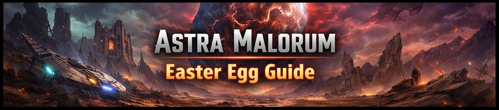

🗺️ Maps Directory
Home
Maps
ALL ZOMBIES MAPS
Select a map below to open its full guide.

Astra Malorum
Main quest guide
OPEN GUIDE
Ashes of the Damned
Main quest guide
OPEN GUIDE
Paradox Junction
Main quest guide
OPEN GUIDE